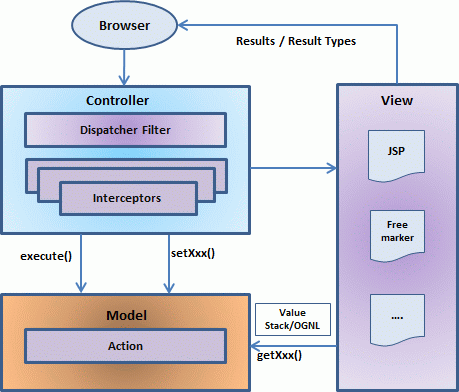

简介
MVC 模型
模型-视图-控制器或通常被称为 MVC，是一种用于开发 web 应用程序的软件设计模式。模型-视图-控制器模式由以下三个部分组成：
-
Model - 模式的最低层，负责维护数据。模型负责管理应用程序的数据。它响应来自视图的请求，而且它也响应来自控制器的指令进行更新自身。
-
View - 负责显示全部或部分的数据给用户。在一个特定格式中数据的展示由一个控制器的决定引发来呈现该数据。
- Controller - 控制器负责响应用户的输入和执行数据模型对象的交互。控制器接收输入，验证输入，然后执行修改数据模型状态的业务操作。
MVC 是受欢迎的，是因为它把应用逻辑从用户接口层中分离，而且支持关注点的分离。在这里，控制器接收应用程序的所有请求，然后与模型一起工作准备好视图需要的任何数据。然后视图使用控制器准备好的数据来生成最终正式的响应。MVC 抽象可以用图形表示，如下所示。

Apache Struts 2 是一个简洁的，可扩展的框架，它用来创建企业级的 Java web 应用程序。框架的目的是随着时间的积累从构建，部署，维护应用程序上简化整个开发周期。
Struts 2 特征：
-
POJO 表单和 POJO 动作 - Struts 2 已经去掉了原先是 Struts 框架的一个组成部分的动作表单，利用 Struts 2，你可以使用任何 POJO 来接收表单的输入。同样，你现在可以看到任何作为 Action 类的 POJO。
-
标签支持 - Struts 2 已经改进了表单标签和新标签允许开发人员编写更少的代码。
-
AJAX 支持- Struts 2 已经确认由 Web2.0 技术接管，并且通过创建 AJAX 标签把 AJAX 支持集成到产品中，AJAX 标签的功能非常类似于标准 Struts 2 标签的功能。
-
易于整合 - 与其他框架如 Spring 一起集成，Tiles 和 SiteMesh 是现在更容易使用各种各样有效的使用 Struts 2 的集成。
-
模板支持 - 支持使用模板生成视图。
-
插件支持 - 核心 Struts 2 的特性可以使用插件得到提高和增强。大量的插件对于 Struts 2 来说是可用的。
-
配置 - Struts 2 提供了集成配置来调试和配置应用程序。除此之外，Struts 还在内置调试工具的帮助下提供了集成调试。
-
易于修改标签 - Struts 2 的标签标记可以使用 Freemarker 模板进行调整。这并不需要 JSP 或 Java 知识。基础的 HTML，XML 和 CSS 知识是足够修改标签的。
-
提升较少的配置 - Struts 2 在使用各种设置的默认值的帮助下促进较少的配置。你不需要配置，除非它偏离 Struts 2 设定的默认设置。
- 视图技术: - Struts 2 大力支持多个视图选项(JSP，Freemarker，Velocity 和 XSLT)
体系结构
Struts 2 的模型-视图-控制器模式由下面的五个核心部件实现：
-
动作
-
拦截器
-
值栈/OGNL
-
结果/结果类型
- 视图技术
Struts 2 与传统的 MVC 框架稍有不同，其中动作担任模型的角色，而不是控制器的角色，虽然有一些重叠。

请求生命周期
-
为了请求一些资源（即页面），用户发送请求到服务器。
-
FilterDispatcher 查看请求，然后确定适当的动作。
-
配置的拦截器功能适用于如验证，文件上传等等。
-
执行选定的动作来执行所请求的操作。
-
再次，如果需要，配置的拦截器应用于做任何后处理。
- 最后由视图准备好的结果，并且将结果返回给用户。
实例
为了任何的 Struct 2 项目，我们将必须创建四个组件：
| 序号 | 组件 & 描述 |
|---|---|
| 1 | 动作
创建一个包含完整的业务逻辑和控制用户，模型和视图之间的交互的动作类。 |
| 2 | 拦截器
如果需要，则创建拦截器，或者使用已存在的拦截器。这是控制器的部分。 |
| 3 | 视图
创建一个与用户交互的 JSPs，它接受输入并且显示最后的信息。 |
| 4 | 配置文件
创建连接动作，视图和控制器的配置文件。这些文件是 struts.xml，web.xml，struts.properties。 |